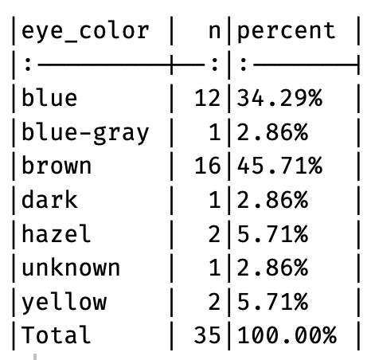
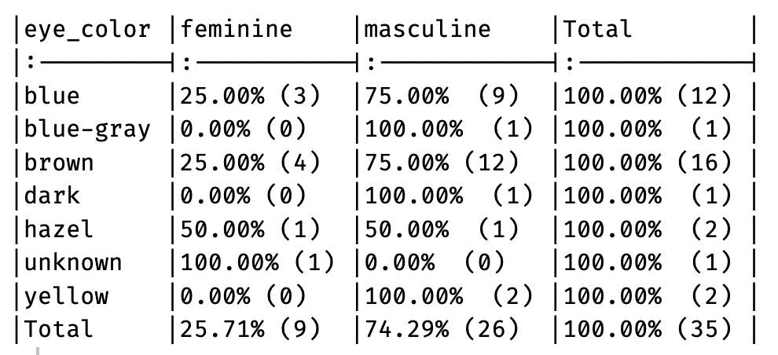

Code
[1] "firstName" "ábc@!*" "% successful (2009)"
[4] "REPEAT VALUE" "REPEAT VALUE" "" March 7, 2025
A (fairly) short post today. I want to introduce you to a great little R package that I load in every one of my scripts, because I never know when I might need to use it. janitor contains several functions, but there are two primary ones that I want to draw your attention to - clean_names and tabyl.
If you have control over the names of the variables in your dataset, can I please implore you to adopt one of the two recommended naming conventions - camelCase or snake_case. I prefer the latter for its readability, so I would suggest that one if you don’t have a preference. A somewhat frustrating (and completely avoidable) issue that I sometimes have to deal with when being sent a dataset, is to spend time renaming variables. White spaces in variable names are by biggest bugbear, but the inclusion of symbols, the capitalisation of some letters, and the use of repeated identical names, follow closely behind. R doesn’t like any of this.
If proactive measures aren’t possible, we can use clean_names in a reactive manner. I will use the same example provided by the package author in their vignette to illustrate how useful clean_names can be. Let’s say we receive a spreadsheet that we import into our R workspace with the following column names:
[1] "firstName" "ábc@!*" "% successful (2009)"
[4] "REPEAT VALUE" "REPEAT VALUE" "" Horrible!
Fixing this, however, is as simple as running clean_names (snake_case is the default) on the dataframe:
[1] "first_name" "abc"
[3] "percent_successful_2009" "repeat_value"
[5] "repeat_value_2" "x" Beautiful!
There is some customisation available within the function and I would encourage you to check that out too.
R’s base table() command gets the job done, but I dare anyone to say it does it nicely. Having some experience with Stata, its equivalent tabulate command provides the readability/presentability luxury of a Rolls-Royce compared to table()’s cramped and bland version of a Datsun Sunny 120Y (the car my good friend drove us around in while we were at Uni BTW - as I said, it gets the job done!)
Let me give you an example. We’ll use the Star Wars dataset that comes with the dplyr package. We’re interested in first tabulating the categories of eye colour in humans, and then after that, cross-tabulating eye-colour with gender.
Base R’s tabulation of eye-colour gives:
blue blue-gray brown dark hazel unknown yellow
12 1 16 1 2 1 2 You can imagine that with a factor that contains more categories, the listing starts to spill out over another row (sometimes more) in your console. It’s just not pleasant to quickly look at and interpret. In comparison, in its most basic call, tabyl() gives:
# A tibble: 7 × 3
eye_color n percent
<chr> <int> <dbl>
1 blue 12 0.343
2 blue-gray 1 0.0286
3 brown 16 0.457
4 dark 1 0.0286
5 hazel 2 0.0571
6 unknown 1 0.0286
7 yellow 2 0.0571It prints in a much more readable column format, and provides percentages, as well as frequencies, by default.
To save keystrokes, I have written a function for myself with a few further embellishments - marginal totals as well as makeshift borders (note you will need to have installed the knitr package if you want to use this). My aim with this and the subsequent function I am going to share with you was to emulate Stata’s tabulate command as much as possible.
Then, with a simple tab1(humans, eye_color, show.miss = T) I can get:

The show.miss = T will include any missing data as a separate category. You can set this to F if you prefer.
Let’s extend the example further by now cross-tabulating eye-colour with gender. The Base R version gives:
feminine masculine
blue 3 9
blue-gray 0 1
brown 4 12
dark 0 1
hazel 1 1
unknown 1 0
yellow 0 2This is actually more readable than the one-way tabulation. In comparison, tabyl() produces:
# A tibble: 7 × 3
eye_color feminine masculine
<chr> <dbl> <dbl>
1 blue 3 9
2 blue-gray 0 1
3 brown 4 12
4 dark 0 1
5 hazel 1 1
6 unknown 1 0
7 yellow 0 2In its default state, not that different I agree. However, to save some time, and also include a couple of useful additional summaries, I have written myself a function for cross-tabulations as well. Again, I have customised this to my liking, by including marginal totals and bordering. Note that as I have specified row percentages, the marginal row totals all add up to 100%.
Now I simply type tab2(humans, eye_color, gender, show.miss = T) to get:

I better stop there. How is it that my ‘short’ posts even somehow become long? Until next time…
---
title: "janitor - Your local R handypackage"
date: 2025-03-07
categories: [code]
image: "R_small.jpeg"
description: "Work smarter, not harder."
format:
html:
df-print: tibble
---
A (fairly) short post today. I want to introduce you to a great little `R` package that I load in every one of my scripts, because I never know when I might need to use it. `janitor` contains several functions, but there are two primary ones that I want to draw your attention to - `clean_names` and `tabyl`.
# clean_names()
If you have control over the names of the variables in your dataset, can I please implore you to adopt one of the two recommended naming conventions - **camelCase** or **snake_case**. I prefer the latter for its readability, so I would suggest that one if you don't have a preference. A somewhat frustrating (and completely avoidable) issue that I sometimes have to deal with when being sent a dataset, is to spend time renaming variables. White spaces in variable names are by biggest bugbear, but the inclusion of symbols, the capitalisation of some letters, and the use of repeated identical names, follow closely behind. `R` doesn't like any of this.
If proactive measures aren't possible, we can use `clean_names` in a reactive manner. I will use the same example provided by the package author in their [vignette](https://cran.r-project.org/web/packages/janitor/vignettes/janitor.html#clean-dataframe-names-with-clean_names) to illustrate how useful `clean_names` can be. Let's say we receive a spreadsheet that we import into our `R` workspace with the following column names:
```{r}
#| message: false
#| warning: false
library(tidyverse)
library(janitor)
# Create a data.frame with dirty names
test_df <- as.data.frame(matrix(ncol = 6))
names(test_df) <- c("firstName", "ábc@!*", "% successful (2009)",
"REPEAT VALUE", "REPEAT VALUE", "")
names(test_df)
```
Horrible!
Fixing this, however, is as simple as running `clean_names` (snake_case is the default) on the dataframe:
```{r}
test_df <- clean_names(test_df)
names(test_df)
```
Beautiful!
There is some customisation available within the function and I would encourage you to check that out too.
# tabyl()
`R`'s base `table()` command gets the job done, but I dare anyone to say it does it nicely. Having some experience with `Stata`, its equivalent `tabulate` command provides the readability/presentability luxury of a Rolls-Royce compared to `table()`'s cramped and bland version of a Datsun Sunny 120Y (the car my good friend drove us around in while we were at Uni BTW - as I said, it gets the job done!)
Let me give you an example. We'll use the Star Wars dataset that comes with the `dplyr` package. We're interested in first tabulating the categories of **eye colour** in humans, and then after that, cross-tabulating **eye-colour** with **gender**.
## One-way Tabulation
Base `R`'s tabulation of **eye-colour** gives:
```{r}
# Load data
humans <- starwars |>
filter(species == "Human")
# Base R table
table(humans$eye_color)
```
You can imagine that with a factor that contains more categories, the listing starts to spill out over another row (sometimes more) in your console. It's just not pleasant to quickly look at and interpret. In comparison, in its most basic call, `tabyl()` gives:
```{r}
humans |>
tabyl(eye_color, show_na = T)
```
It prints in a much more readable column format, and provides percentages, as well as frequencies, by default.
To save keystrokes, I have written a function for myself with a few further embellishments - marginal totals as well as makeshift borders (note you will need to have installed the `knitr` package if you want to use this). My aim with this and the subsequent function I am going to share with you was to emulate `Stata`'s `tabulate` command as much as possible.
```{r}
tab1 <- function(df = dat, var, show.miss = T) {
df |>
tabyl({{var}}, show_na = show.miss) |>
adorn_totals("row") |>
adorn_pct_formatting(rounding = "half up", digits = 2) |>
knitr::kable()
}
```
Then, with a simple `tab1(humans, eye_color, show.miss = T)` I can get:
```{r}
#| eval: false
tab1(humans, eye_color, T)
```
{fig-align="left" height="230"}
The `show.miss = T` will include any missing data as a separate category. You can set this to `F` if you prefer.
## Two-way Tabulation
Let's extend the example further by now cross-tabulating **eye-colour** with **gender**. The Base `R` version gives:
```{r}
table(humans$eye_color, humans$gender)
```
This is actually more readable than the one-way tabulation. In comparison, `tabyl()` produces:
```{r}
humans |>
tabyl(eye_color, gender, show_na = T)
```
In its default state, not that different I agree. However, to save some time, and also include a couple of useful additional summaries, I have written myself a function for cross-tabulations as well. Again, I have customised this to my liking, by including marginal totals and bordering. Note that as I have specified row percentages, the marginal row totals all add up to `100%`.
```{r}
tab2 <- function(df = dat, var1, var2, show.miss = T) {
df |>
tabyl({{var1}}, {{var2}}, show_na = show.miss) |>
adorn_totals("row") |>
adorn_totals("col") |>
adorn_percentages("row") |>
adorn_pct_formatting(rounding = "half up", digits = 2) |>
adorn_ns() |>
knitr::kable()
}
```
Now I simply type `tab2(humans, eye_color, gender, show.miss = T)` to get:
```{r}
#| eval: false
tab2(humans, eye_color, gender, show.miss = T)
```
{fig-align="left" height="230"}
I better stop there. How is it that my 'short' posts even somehow become long? Until next time...